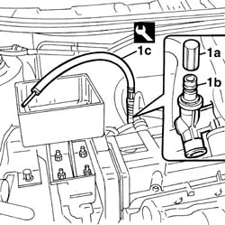
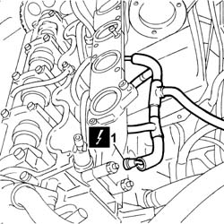
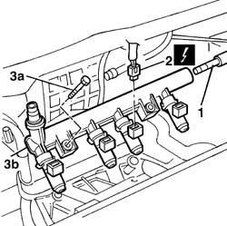
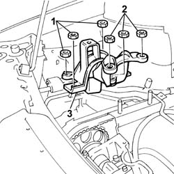
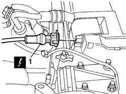
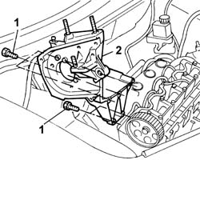
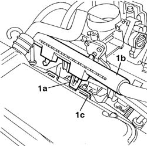
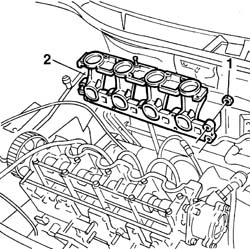
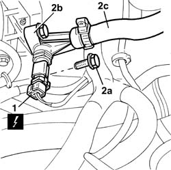
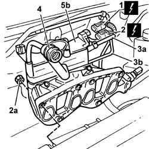

1072B10 inlet manifold - r + r and replace seal
- Path
- Procedures > 10 ENGINE > 1072 INLET AND EXHAUST MANIFOLDS > 1072B inlet manifolds > 1072B10 inlet manifold - r + r and replace seal
- Kind
- repair procedure (removal / refitting; the operation number is the code)
- Applies to
- all engines; all production periods
- Interactive page
- https://sloeber94.github.io/elrnDB-fDbl/en/#/2584257
Applies to: all engines; all production periods
 Removing
Removing
 Refitting
RefittingDisconnect the battery negative terminal.
Place the car on a ramp.
7055B54 under-engine guard - r r
1048A10 air cleaner filtering element - replace
1. Remove the protective cap (1a) for the fuel manifold (1b) and use the tool (1c) for draining the fuel pressure.
Collect the fuel in a suitable container.
 | Name | Country |
|---|---|---|
1c | Rapid connector | 1.870.684.000 |

Applies to: all engines; all production periods
Removing
RefittingPlace the car on the ramp.
Disconnect the battery negative terminal.
 | Name | Connector |
|---|---|---|
- | Battery | A1 |
1048A32 sleeve from air cleaner to intake manifold - r + r
7055B54 under-engine guard - r r
1084A16 oil dip stick pipe - r r
1084A22 engine oil filler - r r
1072B50 sleeves connecting air capacity box to inlet manifold is - r+r
1072B14 inlet manifold - r+r and replace seal with air conveyor/box removed
Applies to: all engines; all production periods
Removing
Refitting7055B54 under-engine guard - r r
1092G10 single engine belt r r
1032D12 timing system protective cover(s) - r + r
1032B10 toothed timing belt - r + r for timing adjustment or replacement
1060A35 injection pump toothed drive pulley - r+r with timing belt removed
1060A10 injection pump - r + r
1. Disconnect the electrical connections for the heater plugs.
2. Place the supply cables for the heater plugs at the side.
| Name | Connector |
|---|---|---|
1 | Heater plugs | A40 |

Applies to: all engines; all production periods
1. Disconnect the rapid attachment for the fuel supply pipe.
2. Disconnect the electrical connectors for the injectors.
| Name | Connector |
|---|---|---|
2 | Injector | N70 |
3. Undo the bolts (3a) and remove the manifold pipe (3b).

Applies to: all engines; all production periods
Refitting
Removing1072B14 inlet manifold - r+r and replace seal with air conveyor/box removed
1072B50 sleeves connecting air capacity box to inlet manifold is - r+r
1084A22 engine oil filler - r r
1084A16 oil dip stick pipe - r r
7055B54 under-engine guard - r r
1048A32 sleeve from air cleaner to intake manifold - r + r
Connect the battery negative terminal.
| Name | Connector |
|---|---|---|
- | Battery | A1 |
Remove the car from the ramps.
Applies to: all engines; all production periods
Position a hydraulic jack beneath the engine to support it.
1. Undo the three nuts securing the support to the bodyshell.
2. Undo the two nuts securing the mount to the engine.
3. Remove the engine mount, timing side.

Applies to: all engines; all production periods
1. Disconnect the electrical connection for the engine rpm sensor.
| Name | Connector |
|---|---|---|
1 | RPM sensor | K46 |

Applies to: all engines; all production periods
1. Unscrew the retaining bolts.
2. Remove the injection pump mount.

Applies to: all engines; all production periods
1. Undo retaining clip (1a) and disconnect injector wiring duct (1b) from slots (1c) on the cam cover.

Applies to: all engines; all production periods
1. Undo the retaining nuts.
2. Remove the intake manifold from the cylinder head.

Applies to: all engines; all production periods
1. Disconnect the electrical connection from the engine coolant temperature sensor.
| Name | Connector |
|---|---|---|
1 | Coolant temperature sender unit | K45 |
Fit a suitable container for coolant recovery.
2. Undo the bolts (2a) fixing the plastic filler (2b), then move it away from the fastening on the intake manifold, complete with coolant hose (2c).

Applies to: all engines; all production periods
Refitting
RemovingFit the intake manifold to the cylinder head.
Tighten the nuts securing the manifold to the cylinder head to the recommended torque.
 | Fastening | Component | Ø | Value (daNm) |
|---|---|---|---|---|
- | Nut | INLET MANIFOLD | M8 | 2.5 |
Fit the injection pump support into its housing and tighten the crankcase securing bolts
| Fastening | Component | Ø | Value (daNm) |
|---|---|---|---|---|
- | Bolt | DIESEL INJECTION PUMP MOUNTING | M8 | 2.5 |
Fit the timing side engine mount by screwing in the nuts securing it to the body and engine without tightening.
Remove the hydraulic lift positioned under the engine.
Position the wiring for the spark plugs and connect the connections to the actual plugs.
| Name | Connector |
|---|---|---|
- | Heater plugs | A40 |
1060A10 injection pump - r + r
1060A35 injection pump toothed drive pulley - r+r with timing belt removed
1032B10 toothed timing belt - r + r for timing adjustment or replacement
1032D12 timing system protective cover(s) - r + r
Applies to: all engines; all production periods
1. Disconnect the electrical connection from the intake air temperature/pressure sensor.
| Name | Connector |
|---|---|---|
1 | Integrated air temperature sensor | K43 |
2. Disconnect the electrical connection for the anti-evaporation solenoid valve.
| Name | Connector |
|---|---|---|
2 | Fuel vapour recovery solenoid | L10 |
3. Disconnect the brake servo vacuum pipe (3a) and the anti-evaporatino system pipe (3b) from the manifold.
Remove the wiring for the injectors from the clips behind the intake manifold.
4. Disconnect the oil vapour recovery pipe, manifold side.
5. Undo the fixing nuts (5a) and remove the intake manifold (5b).

Applies to: all engines; all production periods
Refitting
RemovingFit the intake manifold and tighten the cylinder head bolts to torque.
| Fastening | Component | Ø | Value (daNm) |
|---|---|---|---|---|
- | Nut | INLET MANIFOLD | M18 x 1.25 | 2.7 |
Connect the oil vapour recovery pipe to the tappet cover.
Secure the electrical wiring to the retaining bands located behind the intake manifold.
Connect the anti-evaporation pipe and secure it using the retaining band.
Connect the electrical connection for the intake air temperature/pressure sensor.
| Name | Connector |
|---|---|---|
- | Integrated air temperature sensor | K43 |
Connect the electrical connection for the anti-evaporation solenoid valve.
| Name | Connector |
|---|---|---|
- | Fuel vapour recovery solenoid | L10 |
Connect the brake servo vacuum pipe and the anti-evaporation system pipe to the manifold.
Fit the plastic filler, complete with coolant hose.
Secure the filler to the intake manifold and tighten the fixing bolts.
Connect the electrical connection to the engine coolant temperature sensor.
| Name | Connector |
|---|---|---|
- | Coolant temperature sender unit | K45 |
Connect the electrical connection for the intake air temperature/pressure sensor.
| Name | Connector |
|---|---|---|
- | Integrated air temperature sensor | K43 |
Secure the injector wiring duct to the slots on the cam cover.
Connect the electrical connection for the engine rpm sensor.
| Name | Connector |
|---|---|---|
- | RPM sensor | K46 |
Fit the manifold pipe and secure it using the bolts.
Connect the electrical connectors for the injectors.
| Name | Connector |
|---|---|---|
- | Injector | N70 |
Connect the rapid attachment for the fuel supply pipe.
1068A10 accelerator control cable - r + r
1048A10 air cleaner filtering element - replace
0010T21 coolant check density and top up if necessary
7055B54 under-engine guard - r r
Connect the battery negative terminal.
Remove the vehicle from the ramp.
Topics linked from this page (16)
- 0010T21 coolant check density and top up if necessary
- 1032B10 toothed timing belt - r + r for timing adjustment or replacement
- 1032D12 timing system protective cover(s) - r + r
- 1048A10 air cleaner filtering element - replace
- 1048A32 sleeve from air cleaner to intake manifold - r + r
- 1056B14 THROTTLE CASE - R + R
- 1060A10 injection pump - r + r
- 1060A35 injection pump toothed drive pulley - r+r with timing belt removed
- 1068A10 accelerator control cable - r + r
- 1072B14 inlet manifold - r+r and replace seal with air conveyor/box removed
- 1072B50 sleeves connecting air capacity box to inlet manifold is - r+r
- 1084A16 oil dip stick pipe - r r
- 1084A22 engine oil filler - r r
- 1092G10 single engine belt r r
- 4450B04 right front wheel r r
- 7055B54 under-engine guard - r r